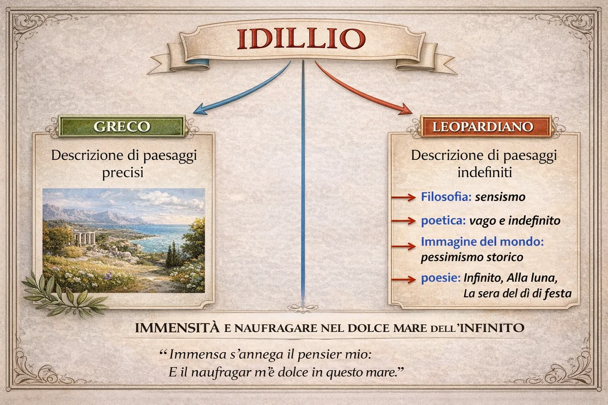
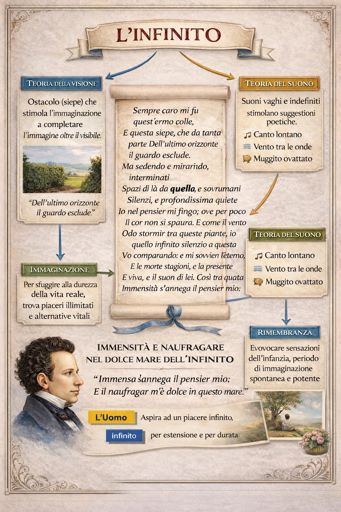

15 versi senza rima obbligatoria
Tutti i versi sono endecasillabi, ma non c’è uno schema di rime né una divisione in strofe. Si chiamano per questo endecasillabi sciolti. La libertà delle rime accompagna il movimento della meditazione.
L’infinito / Cerchio 03 · Il testo
Eccoci al centro. I versi sono il punto di incontro tra la forma, l’immagine del mondo e la poetica. Leggili prima senza interromperti; poi seleziona un verso e cambia la lente di lettura.
15 endecasillabi sciolti. Testo secondo la lezione dei Canti del 1835, con maiuscole iniziali modernizzate.
Tutti i versi sono endecasillabi, ma non c’è uno schema di rime né una divisione in strofe. Si chiamano per questo endecasillabi sciolti. La libertà delle rime accompagna il movimento della meditazione.
L’idillio antico poteva rappresentare scene e paesaggi bucolici. Leopardi trasforma il paesaggio in occasione di esperienza interiore e meditazione. Non è soltanto la descrizione di un luogo.

«interminati / spazi» (vv. 4–5) · «sovrumani / silenzi» (vv. 5–6) · «questa / immensità» (vv. 13–14).
La frase continua dopo la pausa grafica: la sintassi oltrepassa il confine del verso, come l’immaginazione cerca di oltrepassare il limite visibile.
Colle, siepe, orizzonte: la vista è concreta, ma incompleta. Qui nasce la possibilità di immaginare.
La mente figura spazi interminati e silenzi sovrumani, provando quasi paura davanti all’immensità.
Il vento reale viene confrontato con il silenzio immaginato: al pensiero si presenta l’eterno, insieme al passato e al presente.
Il pensiero sembra perdersi nell’immensità, ma questa perdita diventa un’esperienza sorprendentemente dolce.
Il desiderio umano si spinge oltre ciò che l’esperienza finita può offrire. Il quadro del primo Leopardi aiuta a comprendere il valore dell’immaginazione.
Rivedi il pessimismo storico →La vista ostacolata libera la fantasia; un suono concreto fa immaginare il tempo infinito. È il linguaggio del vago e dell’indefinito.
Rivedi visione e suono →Non leggiamo il testo come se fosse un teorema filosofico. I concetti ci aiutano, ma la forza dell’Infinito nasce dalla precisa successione delle parole, delle pause e delle sensazioni.
Il testo è lo stesso. È cambiato il tuo modo di leggerlo: la «siepe» non è solo una pianta; il «vento» non è un dettaglio meteorologico; il «naufragar» non è un evento reale.
Il primo appartiene all'immaginazione e richiama la lontananza, il secondo all’esperienza presente e concreta del vento. Il contrasto apre la meditazione sull’eternità e sul tempo.
Il poeta costruisce con la mente ciò che non può vedere: non mente al lettore, ma immagina l’immensità al di là della siepe.
È una metafora della perdita dei confini abituali del pensiero nell’immensità immaginata, vissuta come un abbandono piacevole, non come un naufragio reale.
Ora che hai attraversato i tre cerchi, osserva come la mappa riunisce immaginazione, visione, suono, rimembranza e desiderio di infinito.

È qui che l’immagine del mondo, la poetica e la forma si incontrano davvero nel testo.
Testo di Leopardi confrontato con Wikisource, Canti (1835), «L’infinito» · Treccani, «L’infinito»: testo, parafrasi e commento.